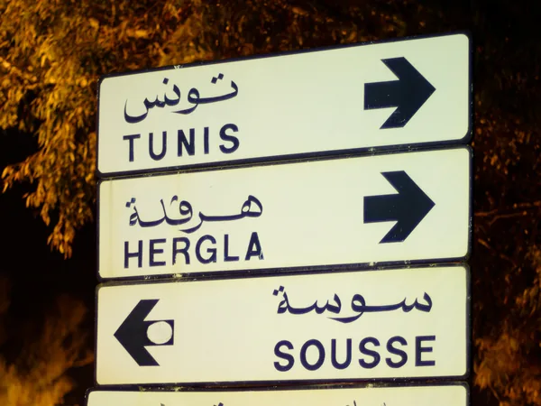
 Avocatsالمحامون29
Avocatsالمحامون29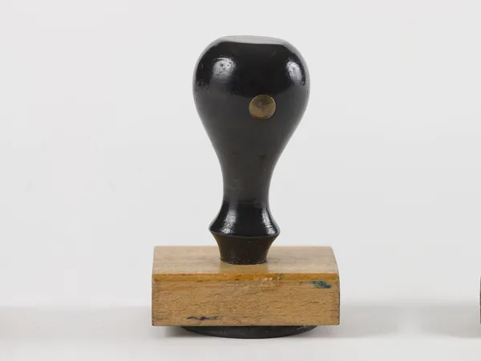

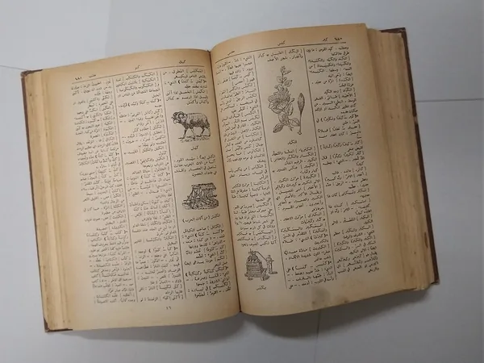
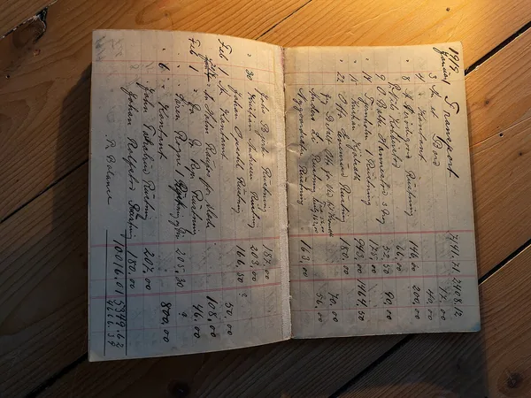
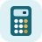
Comptables et experts-comptablesالمحاسبون والخبراء المحاسبون118
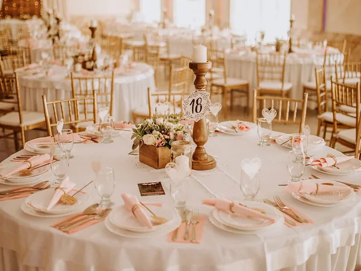
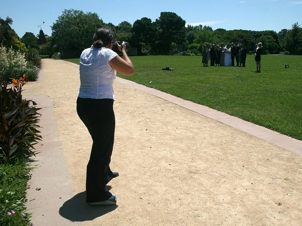
Photographesالمصورون46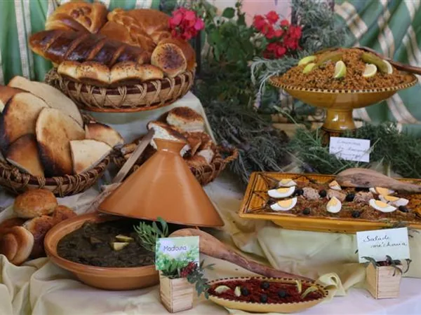

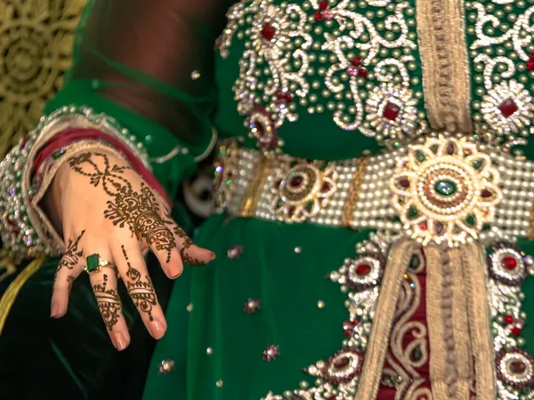
Coiffure et beautéالحلاقة والتجميل82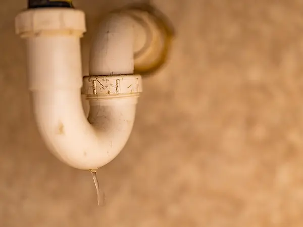
Plombiersالسبّاكون4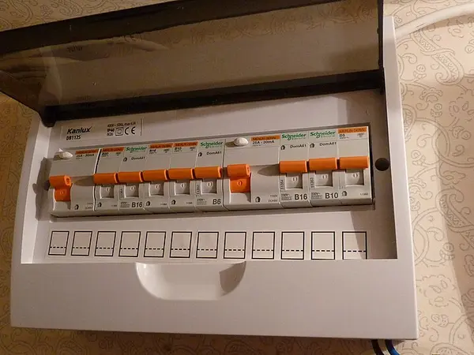
Électriciensالكهربائيون1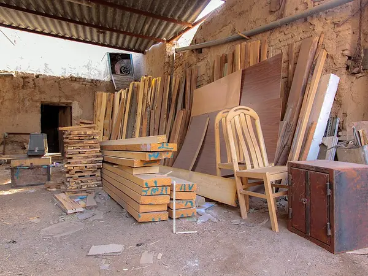
Menuisiersالنجّارون8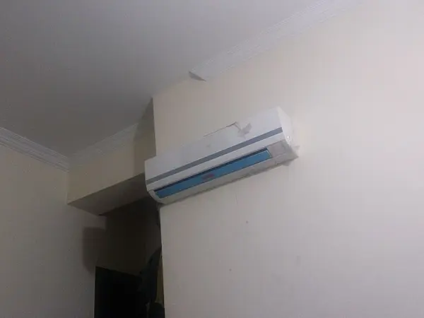
Climatisation et chauffageالتكييف والتدفئة3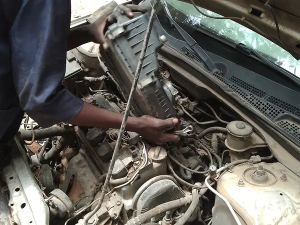
Garages et mécaniciensورشات الميكانيك25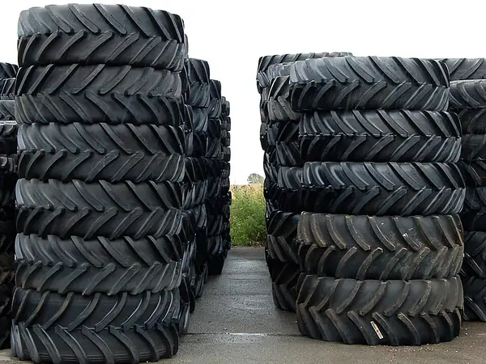
Pneus et vulcanisationمحلات العجلات3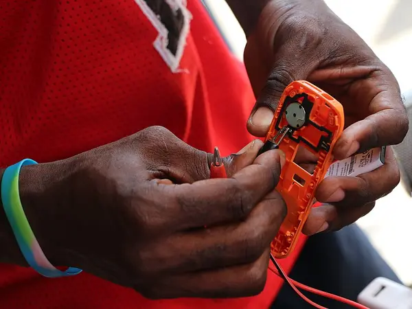
Téléphones et réparationالهواتف والإصلاح19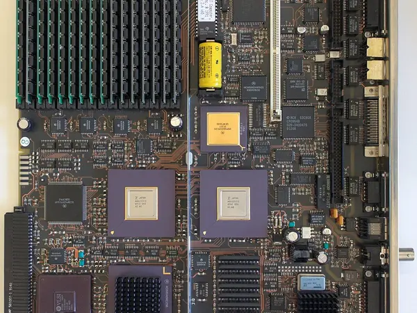
Informatiqueالإعلامية55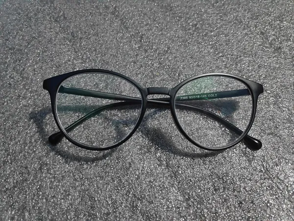
Opticiensمحلات النظارات18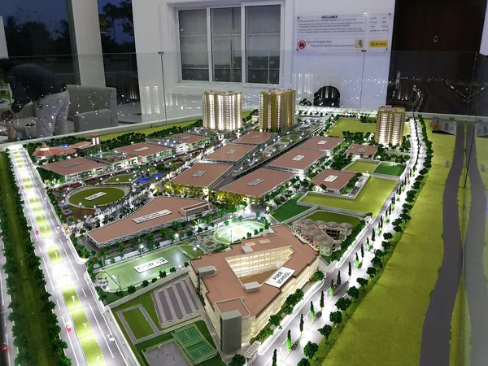
Architectesالمهندسون المعماريون4Loueurs de voituresوكالات كراء السيارات8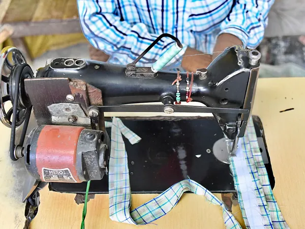
Couturiers et tailleursالخيّاطون3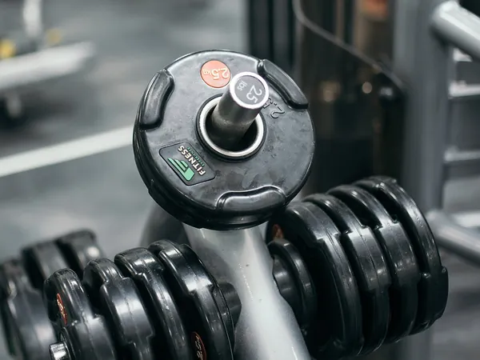
Salles de sportقاعات الرياضة15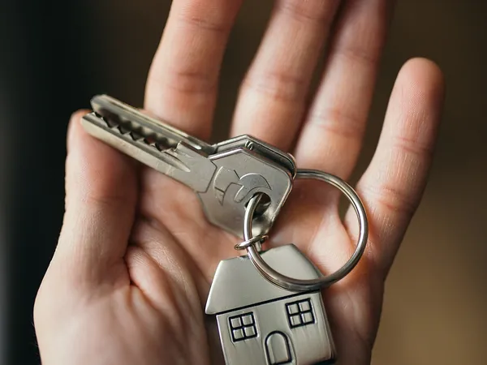
Agences immobilièresالوكالات العقارية137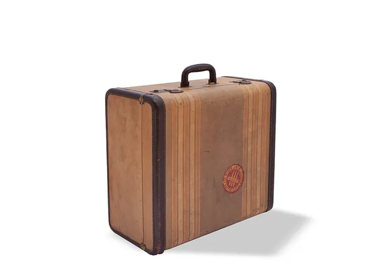
Agences de voyageوكالات الأسفار20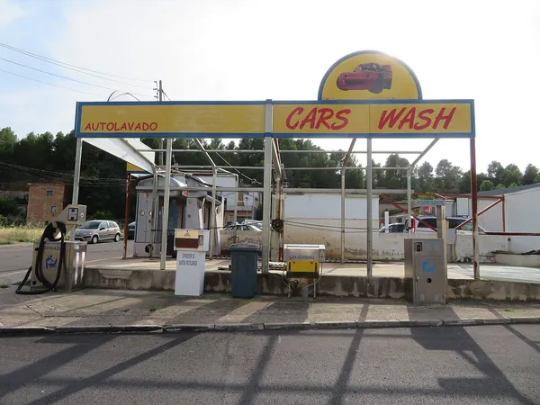
Stations de lavage autoمحطات غسل السيارات3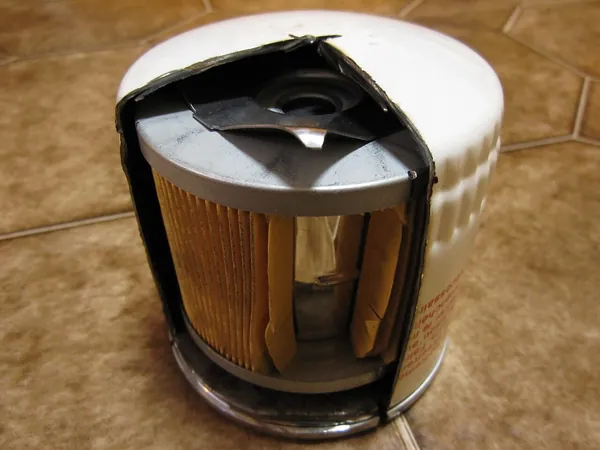
Pièces détachées autoمحلات قطع غيار السيارات15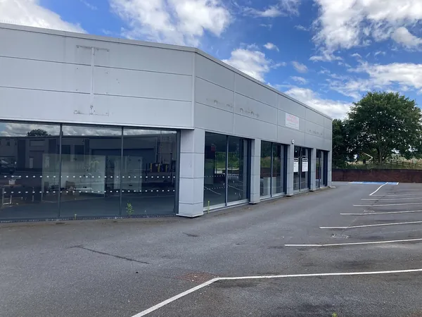
Concessionnaires automobilesوكلاء بيع السيارات16Médecinsأطباء40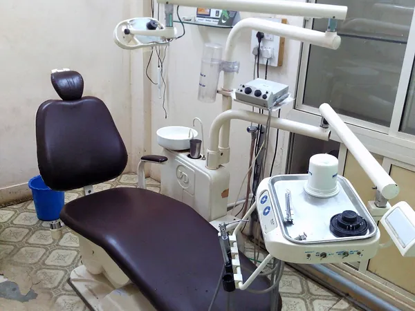
Dentistesأطباء الأسنان49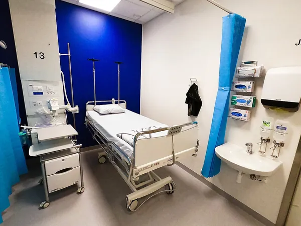
Cliniques et chirurgieالمصحات والجراحة60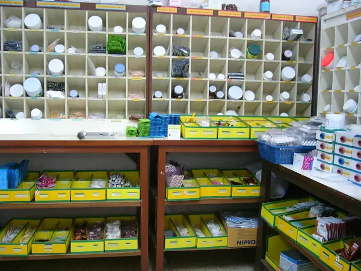
Pharmaciesصيدليات222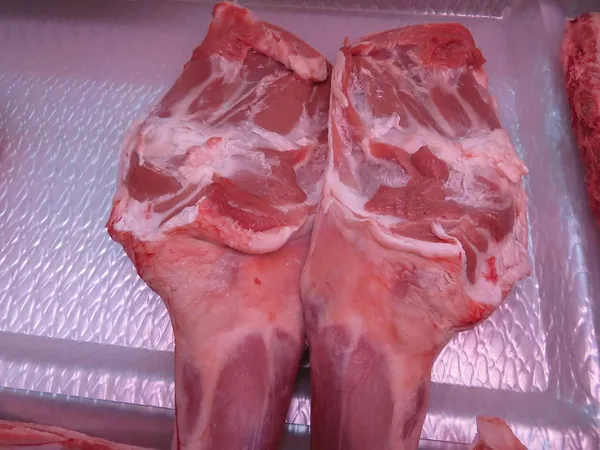
Boucheriesمحلات الجزارة36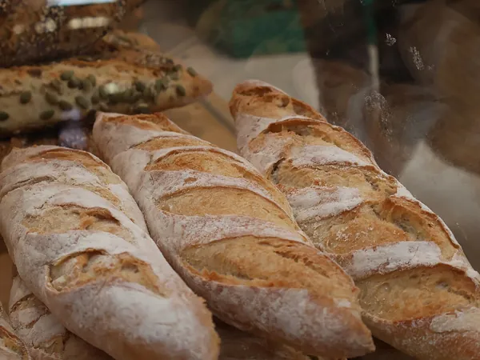
Boulangeriesالمخابز31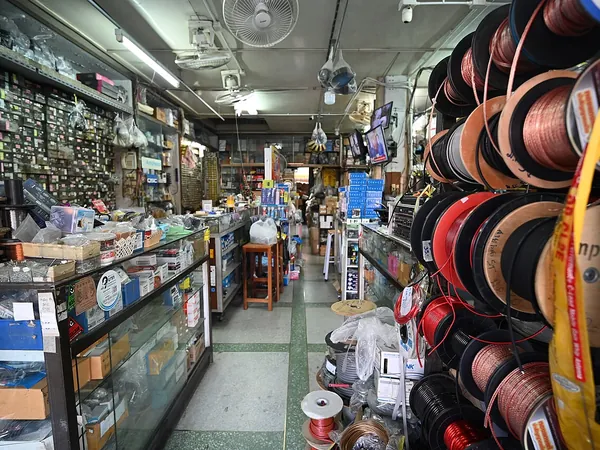
Magasins d'électroniqueمحلات الإلكترونيات19Aucun résultat. Essayez un autre mot ou un autre gouvernorat.لا توجد نتيجة. جرّب كلمة أو ولاية أخرى.
Par gouvernoratحسب الولاية
Vous êtes un professionnel ?هل أنت مهني؟
Soyez trouvé par les Tunisiens qui vous cherchent. Votre fiche existe peut-être déjà : ajoutez-la, vérifiez-la ou corrigez-la gratuitement.اجعل التونسيين الذين يبحثون عنك يجدونك. ربما بطاقتك موجودة: أضفها أو وثّقها أو صحّحها مجانًا.
Gratuit aussi sur nos sitesمجانًا أيضًا على مواقعنا
Modèles de contrats et documents gratuitsنماذج عقود ووثائق مجانية →Contrats de location, de vente, de travail…عقود الكراء والبيع والشغل…Calculs gratuits : salaire, impôt, auto-entrepreneurحسابات مجانية: الأجر، الضريبة، المبادر الذاتي →Selon les barèmes officielsحسب الجداول الرسميةAuto-écoles : l'annuaire spécialiséمدارس السياقة: الدليل المختص →Avocats et notaires : l'annuaire spécialiséالمحامون وعدول الإشهاد: الدليل المختص →Comptables et conseillers : l'annuaire spécialiséالمحاسبون والمستشارون: الدليل المختص →Mariage : l'annuaire des prestatairesالأعراس: دليل مزودي الخدمات →Votre avisرأيك يهمّنا
Une remarque, une erreur, une idée ? Écrivez-nous : chaque message est lu.ملاحظة، خطأ، فكرة؟ اكتب لنا: كل رسالة تُقرأ.